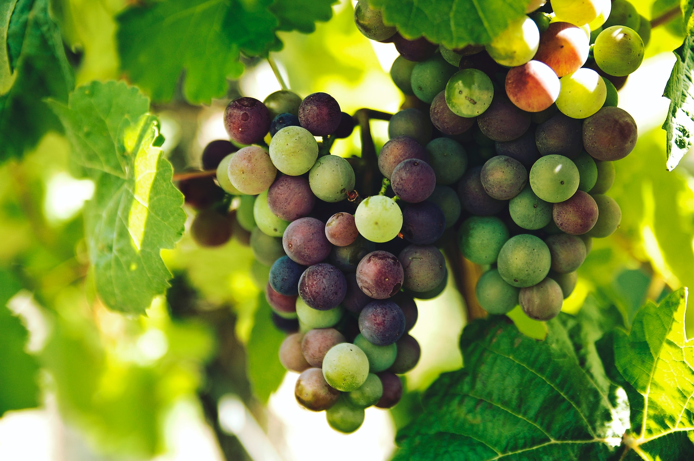

Historia

2Los viñedos
Aquí hay algunos aspectos clave sobre los viñedos de vino:
-
- Ubicación y terroir:
- La ubicación de un viñedo es crucial. El término "terroir" se refiere a la combinación única de factores geográficos, climáticos y del suelo que influyen en el crecimiento de las vides y, por lo tanto, en las características del vino. Esto incluye el tipo de suelo, la altitud, la exposición al sol, la precipitación, la temperatura y otros factores ambientales.
-
- Variedades de uva:
- Los viñedos pueden cultivar una o más variedades de uva, cada una con sus propias características. Algunas vides son ideales para la producción de vinos tintos, mientras que otras son más adecuadas para vinos blancos. Las variedades de uva también pueden ser específicas de una región, lo que contribuye a la identidad única de los vinos de esa área.
-
- Cuidado y manejo:
- Los viñedos requieren cuidados constantes. Esto incluye la poda de las vides para controlar el crecimiento y mejorar la calidad de la uva, la gestión de plagas y enfermedades, y el riego adecuado para asegurar un desarrollo saludable de las plantas.
-
- Cosecha:
- La cosecha de las uvas es un momento crucial. La uva debe ser recogida en el momento óptimo de madurez para obtener la mejor calidad y sabor. La cosecha puede ser manual o mecanizada, dependiendo del tamaño y la tecnología del viñedo.
-
- Sostenibilidad:
- Muchos viñedos están adoptando prácticas sostenibles para reducir su impacto en el medio ambiente. Esto puede incluir el uso de métodos de cultivo orgánicos, la conservación del agua y la promoción de la biodiversidad en el viñedo.
-
- Enoturismo:
- Muchos viñedos ofrecen experiencias de enoturismo, donde los visitantes pueden recorrer los viñedos, aprender sobre el proceso de producción y degustar vinos. Esto ha ayudado a fomentar la conexión entre los consumidores y el proceso de elaboración del vino.
- En resumen, los viñedos son la base de la producción de vino y juegan un papel crucial en la creación de vinos de calidad. Su ubicación, manejo y variedades de uva influyen en el carácter único de los vinos que producen.